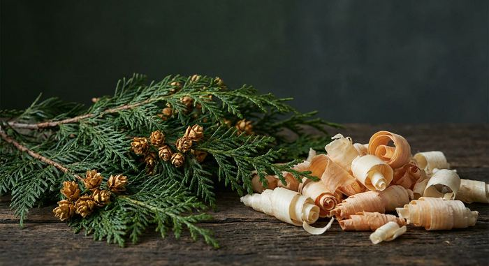

檜ジン・樹木系ジン完全ガイド
使用銘柄28本を徹底比較

檜（ヒノキ）・杉・白樺・トドマツといった樹木系ボタニカルは、日本のクラフトジンでも使われている素材です。ジンの主原料であるジュニパーベリー自体が針葉樹の実であるため、樹木の香りはジンの骨格と最も無理なく重なる方向にあります。
本ページの銘柄は、Gin-DB掲載の全銘柄から公式情報で檜・杉・樹木の使用が確認できたもののみを抽出しています。最終更新：2026-08-29
檜・杉・樹木のジンを買う
このページの掲載銘柄のうち、国際コンテストの受賞歴があり、公式希望小売価格が確認できているものだけを載せています。編集部の主観による順位づけはしていません。掲載外の銘柄も、各銘柄ページから購入先を開けます。
光武酒造場（佐賀県）／ 45% ／ 700ml／200ml ／ ¥2,200（税別・公式希望小売価格）／200ml ¥800（税別）
THE HERBALIST YASO GIN EXTRA HERB
越後薬草蒸留所（新潟県）／ 45% ／ 700ml ／ ¥6,380（税込・公式）
PR ／ アフィリエイトリンクを含みます。
1. なぜ樹木系がジンに合うのか
ジンの定義上の必須ボタニカルであるジュニパーベリーは、ヒノキ科ビャクシン属の植物の実です。つまりジンはもともと針葉樹の香りを核に持つ酒であり、そこに檜や杉を重ねるのは同じ系統を厚くする設計になります。
檜の香りにはα-ピネンなどのテルペン類が含まれ、α-ピネンはジュニパーベリーにも含まれます。共通の成分を持つため、香りが喧嘩せずに奥行きだけが増すのが特徴です。
2. 檜・杉・白樺・トドマツの違い
檜は日本の建築材として最も知られた樹種で、清涼感と甘さを併せ持つ香りです。ジンでは「和の清涼感」を最も端的に出せる素材として使われます。
杉は檜よりも鋭く、樽材としても使われるため木香が強く出ます。樽熟成タイプのジンとの相性が良い方向に働きます。
トドマツは北海道の丹丘蒸留所（雪の窓 ドライジン）が、白樺は長野県の黒澤酒造（黒澤 白樺GIN）や東京都の虎ノ門蒸留所（赤丸薄荷と白樺の葉）が使っています。
3. 樹木系ジンの飲み方
樹木の香りは加水すると開きます。ストレートよりも、少量の常温の水を落とすか、ロックでゆっくり溶かすほうが香りの層が見えやすくなります。
ソーダ割りでは炭酸が針葉樹の香りを持ち上げるため、清涼感が際立ちます。トニックの甘みは木の香りを覆いやすいので、素材を確かめたい場合はソーダが向いています。
冷やした状態から常温に戻る過程で香りが変化するため、時間をかけて飲むことでいちばん楽しめるタイプです。
4. 檜・杉・樹木を使用しているクラフトジン 28銘柄
Gin-DB掲載の全銘柄から、公式情報で檜・杉・樹木の使用が確認できたもののみを抽出しています。度数・容量・価格は各蒸溜所の公式情報に基づき、確認できないものは「未確認」と表示しています。
檜・杉・樹木を使ったジンを数字で見る
地域の分布
アルコール度数の分布
度数を公式で確認できた28銘柄（28銘柄中）で数えています。
1. オーディナリー（オーディナリージン）
Motoki蒸研（京都府京都市上京区）
45% ／ 500ml／200ml／50ml ／ 500ml ¥4,950／200ml ¥2,640／50ml ¥880（税込・公式オンラインショップ）
yumarrestのシグネチャージン
2. 季の美 京都ドライジン
京都蒸溜所（京都府亀岡市（2025年10月に新設した生産拠点。創業地は京都市南区））
45.7% ／ 700ml ／ オープン価格
3. 赤鳥居 オリジナル
光武酒造場（佐賀県鹿島市）
45% ／ 700ml／200ml ／ ¥2,200（税別・公式希望小売価格）／200ml ¥800（税別）
4. 赤鳥居 プレミアム
光武酒造場（佐賀県鹿島市）
45% ／ 700ml／200ml ／ ¥4,600（税別・公式希望小売価格）／200ml ¥1,300（税別）
5. SOMO SOMO
男山（北海道旭川市）
40% ／ 700ml／200ml ／ 700ml ¥6,820／200ml ¥2,420（税込・公式）
2025年12月発売の通年品。男山として初めて全道・全国・海外に展開するクラフトジン
6. 火の帆 KIBOU（きぼう）
積丹スピリット（北海道積丹郡積丹町）
45% ／ 500ml ／ ¥5,940（税込・公式オンラインショップ）
7. 落葉松 ザ・ピンネシリ・クラフトジン
馬追蒸溜所（北海道夕張郡長沼町）
45% ／ 200ml ／ ¥2,900（税込・公式）
限定20本
8. 香立 -KODACHI-
富士白蒸留所(中野BC)（和歌山県海南市）
47% ／ 700ml ／ ¥2,970（税込・公式、箱なし）／箱入りは¥3,850（税込・公式）
9. DOJA
富士白蒸留所(中野BC)（和歌山県海南市）
47% ／ 700ml ／ ¥4,180（税込・公式）
10. 橘花 KIKKA GIN 流転（ルテン）
大和蒸溜所(油長酒造)（奈良県御所市）
47% ／ 700ml ／ ¥5,500（税込・公式）
11. 銀鼠 -GINnez-
櫻の郷酒造（宮崎県日南市北郷町）
44% ／ 200ml ／ ¥990（税込・公式）
12. SAKURAO GIN ORIGINAL
サクラオB&D（広島県廿日市市）
47% ／ 700ml ／ ¥2,000（税別・公式参考小売価格）
13. KUBOTA GIN
朝日酒造（新潟県長岡市朝日）
47% ／ 700ml ／ ¥6,050（税込・公式希望小売価格／通常ボックス）
14. THE HERBALIST YASO GIN EXTRA HERB
越後薬草蒸留所（新潟県上越市）
45% ／ 700ml ／ ¥6,380（税込・公式）
15. Blue Rabbit Tokyo Dry Gin
Blue Rabbit Distillery（東京都大田区田園調布）
43% ／ 700ml ／ ¥5,950（税込・正規流通）
16. BATH LAB GIN #002 ～檜～
羽田ブルワリー（東京都大田区多摩川）
40% ／ 720ml ／ 公式希望小売非公開
コンパウンドジン（非蒸留・浸漬抽出）
17. 4周年ジン hosi
虎ノ門蒸留所（東京都港区）
50% ／ 500ml ／ ¥6,820（税込）
限定。公式に「完売次第終売」
18. 赤丸薄荷と白樺の葉
虎ノ門蒸留所（東京都港区）
45% ／ 500ml ／ ¥5,940（税込）
限定
19. The Japanese Craft GIN 黄金井
黄金井酒造（神奈川県厚木市）
43% ／ 500ml ／ ¥5,280（税込・公式オンラインショップ）
TWSC 3年連続メダル受賞（2022 シルバーほか）
20. The Japanese Craft GIN 黄金井
黄金井酒造（神奈川県厚木市）
43% ／ 200ml ／ ¥2,200（税込・公式オンラインショップ）
21. Yoshida’s CRAFT GIN 荒濾過
西吉田酒造（福岡県筑後市）
40% ／ 700ml ／ ¥2,600（税込・2022年1月の公式リリース時の販売価格）
TWSC2025 洋酒部門 金賞・ベストパフォーマンス賞（蒸溜所公式で確認）
22. クラフトジン ナイトトラベラー
山本酒造店（秋田県山本郡八峰町）
45% ／ 700ml ／ ¥4,400前後（税込・正規流通）
23. 秋田杉GIN
秋田県醗酵工業（秋田県湯沢市）
46% ／ 500ml ／ ¥3,463（税込・公式希望小売）
TWSC2021 ジャパニーズジン部門 最高金賞
24. NOZAWA GIN
野沢温泉蒸留所（長野県下高井郡野沢温泉村）
45% ／ 500ml ／ ¥4,850（税込・公式）
25. 香の森（KANOMORI）
養命酒製造 駒ヶ根工場（長野県駒ヶ根市）
47% ／ 700ml ／ ¥5,192（税込・公式希望小売）
2026-09-20時点で養命酒の公式サイトの商品一覧に掲載が無い（終売の告知は未確認）
26. 黒澤 白樺GIN
黒澤酒造（長野県南佐久郡佐久穂町）
40% ／ 500ml ／ ¥3,300（税込・公式EC）
27. 和美人 The Forest
マルス津貫蒸溜所(本坊酒造)（鹿児島県南さつま市）
47% ／ 700ml ／ ¥4,620（税込）
限定
28. KOMASA GIN ほうじ茶
小正醸造（鹿児島県日置市日吉町）
45% ／ 500ml ／ ¥3,850（税込・公式）
5. 28銘柄スペック比較表
| # | 銘柄 | 所在地 | 度数 | 価格 |
|---|---|---|---|---|
| 1 | オーディナリー（オーディナリージン） | 京都府 | 45% | 500ml ¥4,950／200ml ¥2,640／50ml ¥880（税込・公式オンラインショップ） |
| 2 | 季の美 京都ドライジン | 京都府 | 45.7% | オープン価格 |
| 3 | 赤鳥居 オリジナル | 佐賀県 | 45% | ¥2,200（税別・公式希望小売価格）／200ml ¥800（税別） |
| 4 | 赤鳥居 プレミアム | 佐賀県 | 45% | ¥4,600（税別・公式希望小売価格）／200ml ¥1,300（税別） |
| 5 | SOMO SOMO | 北海道 | 40% | 700ml ¥6,820／200ml ¥2,420（税込・公式） |
| 6 | 火の帆 KIBOU（きぼう） | 北海道 | 45% | ¥5,940（税込・公式オンラインショップ） |
| 7 | 落葉松 ザ・ピンネシリ・クラフトジン | 北海道 | 45% | ¥2,900（税込・公式） |
| 8 | 香立 -KODACHI- | 和歌山県 | 47% | ¥2,970（税込・公式、箱なし）／箱入りは¥3,850（税込・公式） |
| 9 | DOJA | 和歌山県 | 47% | ¥4,180（税込・公式） |
| 10 | 橘花 KIKKA GIN 流転（ルテン） | 奈良県 | 47% | ¥5,500（税込・公式） |
| 11 | 銀鼠 -GINnez- | 宮崎県 | 44% | ¥990（税込・公式） |
| 12 | SAKURAO GIN ORIGINAL | 広島県 | 47% | ¥2,000（税別・公式参考小売価格） |
| 13 | KUBOTA GIN | 新潟県 | 47% | ¥6,050（税込・公式希望小売価格／通常ボックス） |
| 14 | THE HERBALIST YASO GIN EXTRA HERB | 新潟県 | 45% | ¥6,380（税込・公式） |
| 15 | Blue Rabbit Tokyo Dry Gin | 東京都 | 43% | ¥5,950（税込・正規流通） |
| 16 | BATH LAB GIN #002 ～檜～ | 東京都 | 40% | 公式希望小売非公開 |
| 17 | 4周年ジン hosi | 東京都 | 50% | ¥6,820（税込） |
| 18 | 赤丸薄荷と白樺の葉 | 東京都 | 45% | ¥5,940（税込） |
| 19 | The Japanese Craft GIN 黄金井 | 神奈川県 | 43% | ¥5,280（税込・公式オンラインショップ） |
| 20 | The Japanese Craft GIN 黄金井 | 神奈川県 | 43% | ¥2,200（税込・公式オンラインショップ） |
| 21 | Yoshida’s CRAFT GIN 荒濾過 | 福岡県 | 40% | ¥2,600（税込・2022年1月の公式リリース時の販売価格） |
| 22 | クラフトジン ナイトトラベラー | 秋田県 | 45% | ¥4,400前後（税込・正規流通） |
| 23 | 秋田杉GIN | 秋田県 | 46% | ¥3,463（税込・公式希望小売） |
| 24 | NOZAWA GIN | 長野県 | 45% | ¥4,850（税込・公式） |
| 25 | 香の森（KANOMORI） | 長野県 | 47% | ¥5,192（税込・公式希望小売） |
| 26 | 黒澤 白樺GIN | 長野県 | 40% | ¥3,300（税込・公式EC） |
| 27 | 和美人 The Forest | 鹿児島県 | 47% | ¥4,620（税込） |
| 28 | KOMASA GIN ほうじ茶 | 鹿児島県 | 45% | ¥3,850（税込・公式） |
6. よくある質問（FAQ）
Q. 木の香りがするジンは、木材そのものを入れているのですか？
A. 銘柄によります。チップ状にした木材を蒸留時に加える方法、精油を使う方法、樽で熟成させて木香を移す方法などがあります。製法を公表しているかは蒸溜所ごとに異なります。
Q. ジュニパーベリーも木の実ですか？
A. はい。ジュニパーベリー（セイヨウネズ）はヒノキ科の植物の球果です。「ジンらしさ」と呼ばれる香りの正体そのものが針葉樹系の香りです。